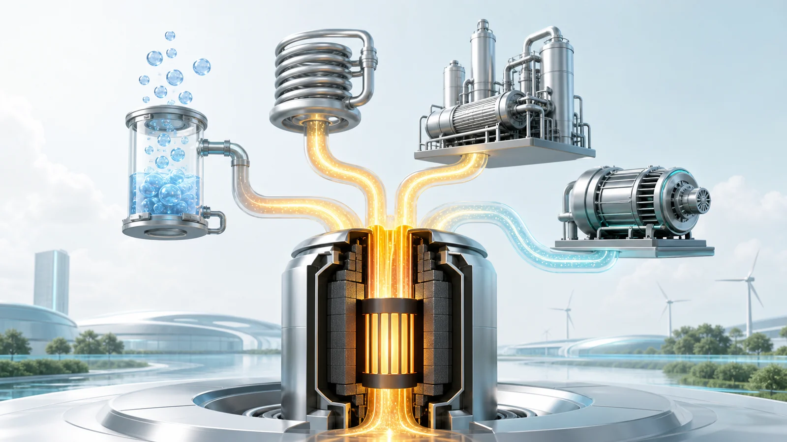
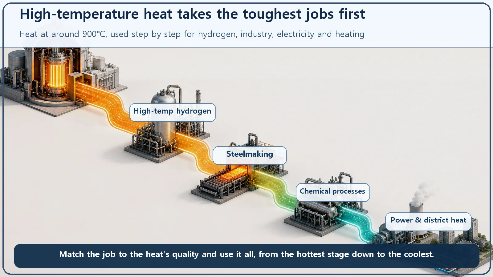
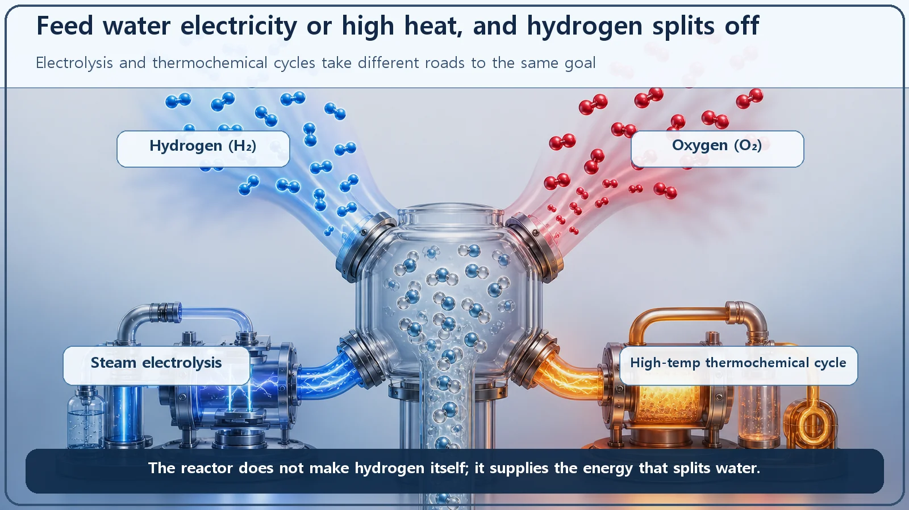

Reactor Types & Plant Systems · 183
Too Hot to Waste on Electricity Alone — Why High-Temperature Gas Reactors (HTGRs) Are Eyeing Hydrogen Production
Helium never boils, so an HTGR can deliver heat near 900°C. Heat that hot can do more than make electricity: it can help split water into hydrogen.

A high-temperature gas reactor (HTGR) is cooled by helium and moderated by graphite, so its coolant leaves the core at roughly 700–950°C instead of about 320°C. Heat that hot can go straight to industry as process heat, and above all it can help split water into hydrogen, by high-temperature steam electrolysis or by thermochemical cycles that run on heat alone.
The hotter the water, the more it can do
Think about hot water at home. Water at about 40°C is good for washing your hands. Around 80°C, you can brew tea. Bring it to a rolling 100°C boil and you can cook noodles or sterilize a baby bottle. Same "heat," but the hotter it gets, the more jobs it can do.
Reactors work the same way, and the nuclear plants most of us know are, surprisingly, "lukewarm." The high-temperature gas reactor delivers much hotter heat, and that lets it take on one more useful job besides electricity: pulling hydrogen out of water.
The familiar nuclear plant is surprisingly "lukewarm"
In an ordinary nuclear plant, a pressurized water reactor (the most common type, which uses water as coolant and keeps it from boiling with high pressure), the water leaving the core is at roughly 320°C. Lukewarm? In industry, yes: it is plenty to make steam for a turbine, but it can't reach jobs that need hotter heat.
However much you raise the pressure, water's temperature can't be pushed up indefinitely, because at some point it boils. As long as water is the coolant, there's a temperature ceiling.
So: helium instead of water, graphite as moderator
The high-temperature gas-cooled reactor (HTGR) removes that ceiling by using different materials. Its coolant is not water but helium gas, the same helium that goes into party balloons.
Helium is a very well-behaved gas. It barely reacts with anything, it doesn't capture or interfere with neutrons in the reactor, and above all it can't boil, because it is already a gas. With no phase change from liquid to steam, you can raise its temperature to 700°C, even 900°C, and the coolant itself stays calm. This hot helium carries the core's heat away.
For a moderator it uses graphite. A moderator slows down the fast neutrons released by fission so that the next fission happens more readily. Graphite, the form of carbon familiar from pencil lead, keeps its shape at high temperature without melting or crumbling, so it does its job even in a core above 900°C.
The fuel is special too. It uses tiny fuel particles called TRISO: very small uranium kernels wrapped in several hard layers of carbon and silicon carbide. Each particle, less than 1 millimeter across, locks the radioactive material inside its layered shells, a bit like an onion. These shells are tough enough that they are known to hold fission products in up to about 1,600°C. The particles are packed into graphite balls about the size of a billiard ball, or into hexagonal graphite blocks, to build the core.

Heat this hot is wasted on electricity alone
Heat close to 900°C can of course make electricity, and the higher the temperature, the better the conversion efficiency generally gets. But using it only for electricity is a waste, because heat of this "grade" can do much more.
Industry has processes that need very high temperatures. Supplying a power plant's high-temperature heat directly to industrial processes, as heat rather than electricity, is called process heat use. And the use attracting the most attention right now is hydrogen production.
Getting hydrogen out of water
The cleanest way to get hydrogen is to split water, since water is hydrogen and oxygen bonded together. As a chemical equation:
2H₂O → 2H₂ + O₂
Two water molecules split into two hydrogen molecules and one oxygen molecule. But water is very stable and won't split on its own; you have to put energy in. This is where the HTGR's hot heat comes in. There are two main routes.
First, high-temperature steam electrolysis. Electrolysis splits water by passing electricity through it, as in a school lab. Do it with hot steam instead of room-temperature water and something interesting happens: the higher the temperature, the smaller the share of "electricity" needed to split the water. "Heat" fills in the difference. Electricity is expensive and heat is relatively cheap, so adding high-temperature heat means you need less electricity for the same amount of hydrogen. That is exactly the job the HTGR's heat can do.
Second, thermochemical cycles. These split water using almost no electricity, with heat alone. Several chemical reactions are chained together so that the net result is water broken into hydrogen and oxygen. The chemicals involved return to their original form after each lap, so they are recycled rather than used up while water steadily becomes hydrogen. The best-known example uses sulfur and iodine and needs heat at roughly 850–900°C, a good match for the temperatures an HTGR delivers.
Why go to all this trouble for hydrogen?
Hydrogen is a fuel that produces only water, no carbon dioxide, when burned, and it is also an essential industrial raw material. Large amounts are used to make ammonia for fertilizer, to refine petroleum, and to extract iron from iron ore.
The problem is that most of the hydrogen used today is made by processing natural gas at high temperature, which releases carbon dioxide. If hydrogen is instead made by splitting water with heat from an HTGR, the carbon emissions from production can be cut sharply. Hot nuclear heat could be a key to "low-carbon hydrogen." Because of this potential, HTGR demonstrations have continued in several countries.

A few easy mix-ups
"Gas reactor" sounds like a reactor that burns gas. Not at all. The "gas" just means the coolant is helium gas; the energy still comes from nuclear fission. Nothing is being burned.
The reactor's helium or cooling water turns into hydrogen. No. What the reactor provides is heat, which passes through a heat exchanger to a separate hydrogen production process. Radioactive coolant never flows into the hydrogen feedstock; for safety, the reactor system and the hydrogen process system are kept separate.
Any reactor can do this. Low-temperature electrolysis using electricity alone can run on any power source. But hydrogen production that uses high-temperature heat, the focus here, and especially thermochemical cycles, needs heat close to 900°C. That doesn't come from a common water-cooled light-water reactor, only from certain designs such as the HTGR.
Hydrogen is just a dangerous explosive. It is a flammable gas that has to be handled with care, but industry already produces and handles it safely in large quantities. A balanced view sees it as a valuable raw material and fuel too.
The one-line takeaways
- An HTGR uses helium gas as coolant and graphite as moderator, raising the coolant outlet temperature to roughly 700–950°C (far hotter than the roughly 320°C of a typical pressurized water reactor).
- Water boils, which caps coolant temperature; helium doesn't, so it can deliver heat in the 900°C range. The fuel is tiny TRISO particles that lock radioactive material inside layered shells.
- The hotter the heat, the wider its uses. Supplying it directly to industry is process heat use, and hydrogen production stands out.
- There are two ways to split water (2H₂O → 2H₂ + O₂): high-temperature steam electrolysis (less electricity at higher temperature) and thermochemical cycles that run on heat alone (about 850–900°C needed).
- Hydrogen is a low-carbon fuel and a key raw material for ammonia, refining and steelmaking. Most is made from natural gas today, releasing carbon dioxide; splitting water with HTGR heat can yield low-carbon hydrogen.
A reactor whose real strength is heat itself shows that nuclear energy can reach well beyond electricity. Heat at 900°C is too valuable to waste.